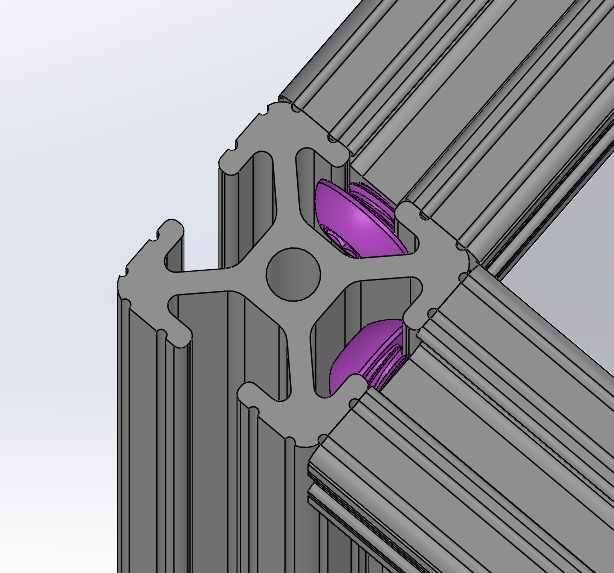
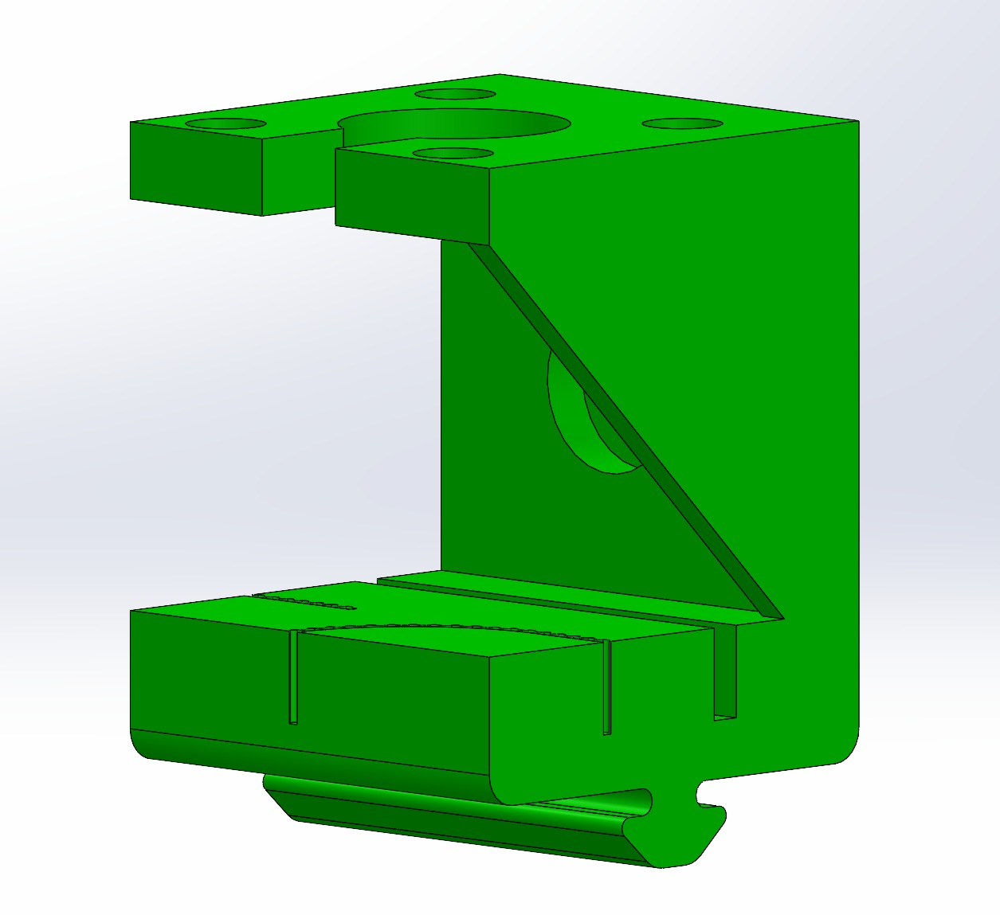
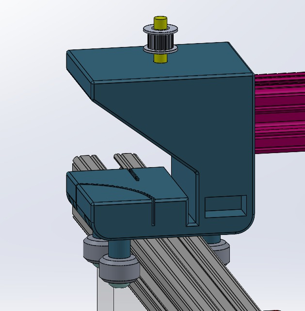
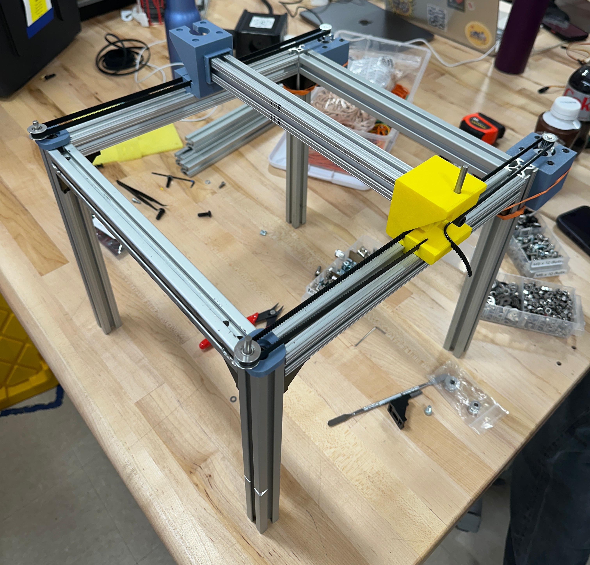
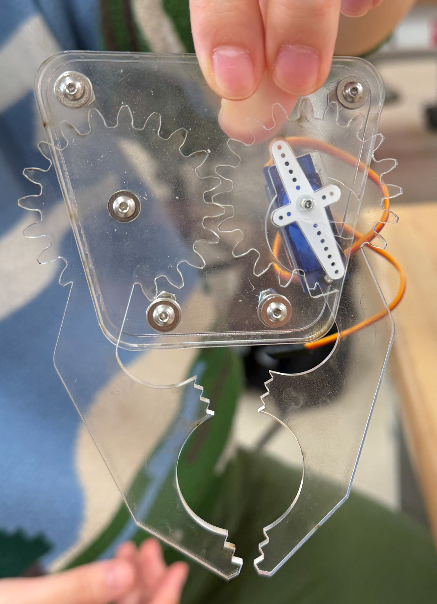
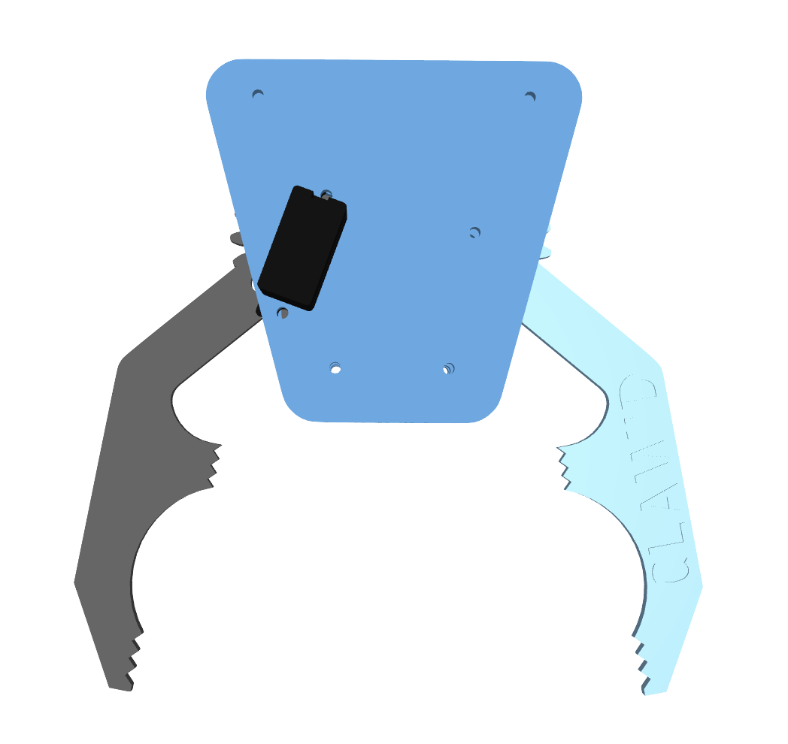
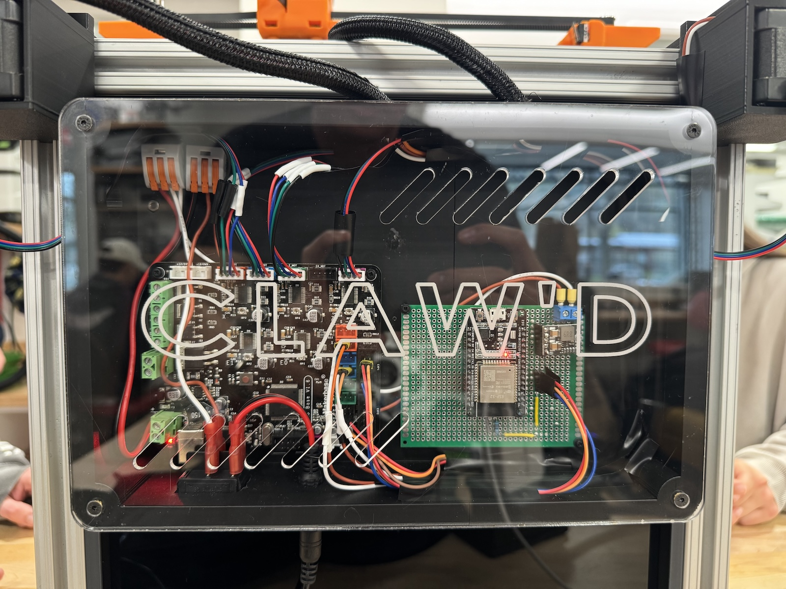
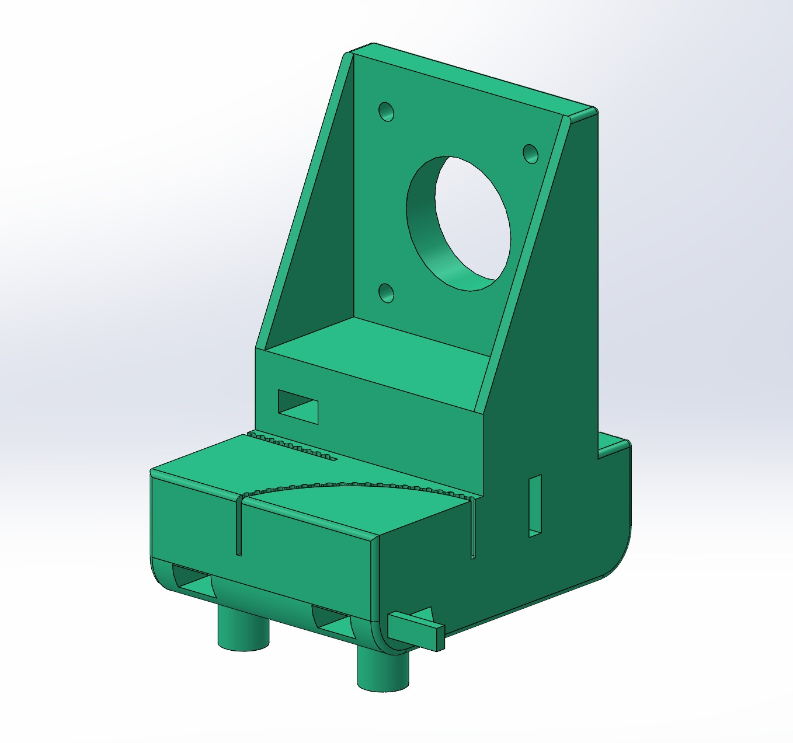
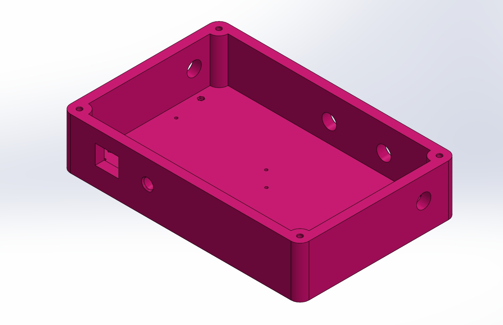

Overview
Claw'd is a fully functional, wirelessly controlled claw machine built from scratch as a 3.5 DOF Cartesian gantry system. A player picks up a PS5 DualSense controller, pairs it over Bluetooth, and uses the left joystick to position a two-finger claw over a prize. Pulling the right trigger initiates an automated grab sequence — the claw descends, closes, retracts, and the player can either retry or dispense the prize to a drop zone. The entire gameplay loop is managed by a finite state machine running on an ESP32.
The assignment required a 2.5 DOF Cartesian motion system with a minimum 2.5 in × 2.5 in end effector work area. We chose a claw machine for three reasons. First, the end effector posed a genuine mechanical design challenge — unlike an electromagnet or pen holder, a two-finger claw required designing a gear-driven linkage, selecting an actuator, and managing grip geometry from scratch. Second, a claw machine is immediately recognizable and interactive, making it ideal for a live demo where classmates could walk up and play without explanation. Third, we elected to build 3.5 DOF instead of 2.5, adding a full spool-driven Z-axis to push our engineering further.
Exceeding requirements: 3.5 DOF (vs. 2.5 minimum), 250 mm × 200 mm work area (vs. 2.5 in × 2.5 in minimum), custom original end effector (extra credit), and the only team in our section to implement bearing-based carriages.
Degrees of Freedom
The system has 3.5 degrees of freedom organized across four axes:
X-axis (DOF 1) — Horizontal translation driven by two synchronized NEMA 17 stepper motors, one on each end of the X-axis extrusion. Both motors are commanded as a dual-stepper pair through Marlin's X_DUAL_STEPPER_DRIVERS feature, with the second motor assigned to the E1 driver slot. Travel: 250 mm.
Y-axis (DOF 2) — Horizontal translation perpendicular to X, driven by a single NEMA 17 stepper. The Y motor rides on a carriage along the right-side X-rail, translating with X-axis motion. Travel: 200 mm.
Z-axis (DOF 3) — Vertical translation driven by a single NEMA 17 stepper mounted on a carriage that rides the Y-axis extrusion. Instead of a belt-driven linear stage, the Z-axis uses a spool mounted directly on the motor shaft with fishing line running down to the claw. Spooling and unspooling raises and lowers the claw. Travel: 250 mm. Z is not homed via a limit switch — it is manually set to a starting height before power-on and holds position via holding torque. During grab sequences, the firmware descends a fixed 100 mm and retracts by the same amount.
Claw (0.5 DOF) — A binary open/close gripper actuated by an SG90 micro servo, toggling between 90° (closed) and 155° (open). This constitutes the half degree of freedom since it has only two discrete states rather than continuous positioning.
Mechanical Design
Frame Structure
The structural frame is built entirely from 25 mm × 25 mm 8020 aluminum extrusion connected without any L-brackets or corner hardware. The frame uses nine bars total: two 12-inch bars along X forming the gantry rails, three 12-inch bars along Y connecting the X-rails (including the Y-axis travel rail), and four 16-inch vertical bars serving as corner posts.
Corner joints are achieved by passing bolts through a through-hole drilled in the vertical post, threading into the axial end-tap hole of the adjoining X or Y bar. This makes the top of each vertical post flush with the top surface of the X-axis extrusion, creating a planar top. The overall gantry height before accounting for motors is 16 inches.

Three-Bearing Carriage System
All moving carriages use a three-bearing design that rides on the T-slot rails of the 8020 extrusion. Each carriage has two bearings on one side face of the extrusion and one bearing on the opposite side face. The bearings sit inside the T-slot channel, constraining the carriage laterally while allowing smooth linear travel.
This design replaced an earlier version that used 3D-printed T-slot adapters mounted to the top face of the extrusion. The T-slot adapters suffered from excessive friction and were prone to wobble due to moment loading. The switch to the three-bearing approach was transformative — we were the only team in our section to successfully implement bearing-based carriages, and the improvement in motion quality was dramatic.
The bearing carriage went through five or more design iterations to achieve correct tolerances for 3D-printed parts under load. Each iteration was fully modeled in CAD before printing, and the carriage body integrates the motor mount and belt attachment directly — no separate mounting hardware needed.


Belt Routing
All axes use GT2 timing belts. On the X-axis, each of the two X-rails has a belt running along its length, driven by its respective motor on one end and tensioned by an idler pulley on the other. The Y-axis belt runs along the Y-axis extrusion connecting the two X-carriages. Belts are press-fit into the carriage bodies for tensioning — there is no separate tensioning mechanism.

End Effector
The end effector is a custom-designed two-finger claw built entirely from laser-cut acrylic. It was not derived from any existing claw design and qualifies for the extra-credit original end-effector criterion.
The claw uses a single-servo gear-driven linkage. One finger has the SG90 servo horn embedded directly into its gear. This gear meshes with the second finger's gear, so one finger is actively driven and the other follows passively through the gear mesh. Toggling the servo between 90° and 140° opens and closes the fingers.
To prevent the claw grip from being nearly planar — which would allow fingers to shear past each other and make grabbing unreliable — the team stacked multiple layers of laser-cut acrylic finger profiles on top of one another to build up thickness in the gripping surfaces.


The claw attaches to the Z-axis via fishing line tied with a standard knot. The line runs up to a 3D-printed spool on the Z-motor shaft. The claw hangs freely and can rotate about the line's vertical axis — one reason the Z-axis is not homed with a traditional limit switch, since a dangling, rotating claw would not reliably trigger a contact-based switch.
Electronics & Control
Hardware Stack
The system's electronics are split across two boards. The MKS Base v1.6 serves as the motor driver, running customized Marlin firmware and driving all four NEMA 17 steppers plus the SG90 servo. The ESP32 serves as the wireless controller bridge and gameplay brain, connecting to a PS5 DualSense controller over Bluetooth using the Bluepad32 library and sending G-code commands to the MKS over UART at 250,000 baud.
Power enters through a barrel jack on the electronics housing, with 12V routed to the MKS and stepped down to 5V via a buck converter for the ESP32. Both boards are mounted on standoffs inside a 3D-printed electronics housing attached to the rear acrylic wall.

Firmware Architecture
The MKS Base runs a customized build of Marlin firmware. Key modifications include enabling X_DUAL_STEPPER_DRIVERS with INVERT_X2_VS_X_DIR true so both X motors move in sync from a single axis command, configuring servo output on pin D11, and — critically — disabling the standard USB serial input and rerouting serial communication to accept commands from the ESP32 over UART. This was necessary because the MKS does not natively support multi-serial input or wireless control.
The ESP32 runs the gameplay state machine, coded in Arduino/C++ under the Bluepad32 ESP32 board package. The state machine has five states:
STATE_INIT — Waits for the PS5 controller to pair over Bluetooth, then auto-homes X and Y.
STATE_XY — Player controls XY position with the left joystick. Pressing RT with sticks neutral triggers a grab.
STATE_GRAB — Automated blocking sequence: open claw, descend Z 100 mm, close claw, ascend Z 100 mm.
STATE_RETRY — Player can reposition, press RT to re-grab, or press LT to dispense.
STATE_DISPENSE — Automated sequence: travel to preset dispense position (X=250, Y=0), open claw to drop prize, close claw, re-home.
void loop() {
BP32.update();
drainMarlin();
bool connected = (myGamepad && myGamepad->isConnected());
switch (gameState) {
case STATE_INIT:
if (needsHoming) {
needsHoming = false;
if (runHomingSequence()) {
gameState = STATE_XY;
}
}
break;
case STATE_XY:
if (!connected) break;
handleXYJoystick();
if (myGamepad->throttle() > TRIGGER_THRESHOLD) {
unsigned long now = millis();
if ((now - lastTriggerTime) >= TRIGGER_DEBOUNCE_MS) {
if (allSticksNeutral()) {
lastTriggerTime = now;
gameState = STATE_GRAB;
}
}
}
break;
case STATE_GRAB:
runGrabSequence();
gameState = STATE_RETRY;
break;
case STATE_RETRY:
if (!connected) break;
handleXYJoystick();
{
unsigned long now = millis();
if ((now - lastTriggerTime) >= TRIGGER_DEBOUNCE_MS) {
if (myGamepad->throttle() > TRIGGER_THRESHOLD) {
if (allSticksNeutral()) {
lastTriggerTime = now;
gameState = STATE_GRAB; // RT → re-grab
}
} else if (myGamepad->brake() > TRIGGER_THRESHOLD) {
if (allSticksNeutral()) {
lastTriggerTime = now;
gameState = STATE_DISPENSE; // LT → dispense
}
}
}
}
break;
case STATE_DISPENSE:
runDispenseSequence();
gameState = STATE_XY;
break;
}
}void runGrabSequence() {
// Step 1 — Open claw
setServo(SERVO_OPEN);
// Step 2 — Descend
float targetZ = posZ + GRAB_DEPTH_MM;
if (targetZ > Z_MAX) targetZ = Z_MAX;
char cmd[64];
snprintf(cmd, sizeof(cmd), "G1 Z%.1f F%d", targetZ, FEEDRATE_Z);
sendGcodeBlocking(cmd, Z_MOVE_TIMEOUT_MS);
posZ = targetZ;
sendGcodeBlocking("M400", Z_MOVE_TIMEOUT_MS);
// Step 3 — Close claw
setServo(SERVO_CLOSED);
// Step 4 — Ascend
float returnZ = posZ - GRAB_DEPTH_MM;
if (returnZ < Z_MIN) returnZ = Z_MIN;
snprintf(cmd, sizeof(cmd), "G1 Z%.1f F%d", returnZ, FEEDRATE_Z);
sendGcodeBlocking(cmd, Z_MOVE_TIMEOUT_MS);
posZ = returnZ;
sendGcodeBlocking("M400", Z_MOVE_TIMEOUT_MS);
}Joystick input is processed with a deadzone filter and normalized scaling. Movement commands are sent as non-blocking G1 G-code at 4000 mm/min for XY and 1500 mm/min for Z. Trigger presses are debounced at 500 ms and require all joystick axes to be neutral to prevent accidental activation while the player is still moving.
Fabrication
3D-Printed Parts
All custom structural and mechanical parts were 3D printed in standard PLA. The team initially experimented with PLA Silk filament for its appealing surface finish, but found it too brittle with poor dimensional tolerances. After testing different flow rates and print speeds, we switched to a standard engineering-grade PLA that provided the tight tolerances needed for bearing seats, press-fit features, and structural carriage components.
Key printed parts include: two X-motor housings (with T-slot adapters and press-fit limit switch recesses), two idler axle holders (press-fit into end-tap holes), the Y-motor carriage and passive Y-carriage (three-bearing design with integrated belt attachment), the Z-motor carriage (bearing-based, motor oriented in +X for vertical spool operation), the spool itself, and the electronics housing (featuring embedded nuts, heat-set inserts, standoffs for both boards, and press-fit holes for the power switch and barrel jack).


Laser-Cut Parts
The enclosure walls and claw components were all laser cut from acrylic. Three clear panels (front and both sides) provide full visibility into the claw working area, while a black rear panel obscures the electronics housing and keeps visual focus on the interior. The bottom platform is also black acrylic. The claw fingers use stacked layers of acrylic to build up gripping thickness, and the electronics housing lid is clear acrylic to show the boards and cable management inside.
Challenges & Iterations
Carriage Redesign
The single biggest mechanical improvement was migrating from 3D-printed T-slot adapters to the three-bearing carriage system. The T-slot adapters mounted carriages directly to the top face of the extrusion, but suffered from high friction and moment-induced wobble. The bearing approach — riding on the side-face T-slot channels — delivered dramatically smoother and more precise motion. This change went through five-plus iterations to get printed tolerances and load handling right.
Cable Management
Routing power and signal wires from the stationary electronics housing to dynamically moving axes was one of the hardest integration challenges. The servo cable was especially difficult — it moves in X, Y, and Z throughout operation. Loose wires risked sagging into the prize area and tangling with the claw. The solution involved precisely calculating cable lengths, cutting and soldering to exact dimensions, adding calibrated slack, and encasing everything in a rigid cable sheath that bends in controlled, repeatable arcs without entering the working volume.
Firmware Rewrite
The MKS Base v1.6 does not support multiple serial inputs or wireless control out of the box. We had to modify the Marlin firmware to disable the default USB serial interface and reroute serial communication to accept commands from the ESP32 over UART. This allowed the ESP32 — with its Bluetooth capability and more modern development environment — to serve as the system's brain, sending G-code commands to the MKS which then handled low-level stepper driving.
Material Selection
Early prints used PLA Silk, which had an appealing surface finish but was too brittle and had poor dimensional accuracy. After experimenting with different flow rates and print speeds, we switched to standard PLA — sacrificing aesthetics for the tight tolerances needed in bearing seats, press-fit features, and structural carriage components.
Demo Results
The demo was a complete success. The system operated with zero failures across all attempts. The claw successfully picked up a variety of prizes including small plushies and custom plushies featuring team members' and professors' faces, created by iron-on printing sticker transfers onto fabric.
Every subsystem performed as intended: wireless PS5 controller pairing was immediate, joystick-to-gantry latency was imperceptible, XY homing was reliable, the automated grab sequence worked consistently, claw grip was strong enough to hold prizes through the full retract-and-travel cycle, and the dispense sequence completed without issue.